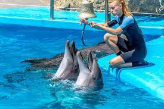
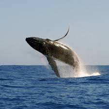

My projects and internship experience

U.S. Navy Marine Mammal Foundation
Obtained hands-on experience with bottlenose dolphins and sea lions by maintaining behaviors and performing medical checks using operant conditioning.
Website

Low-frequency acoustic analysis of Baleen whales in Nunatsiavut
This is a presentation I gave to the Canadian governemnt about the types of Baleen whales found of the east coast of Canada. These calls were detected using underwater microphones to record their calls which were then converted into a spectogram in MatLab.
Google slide
Study Buddy webpage
A project I made using html and css for a computer design class I took at UCSD.
Webpage